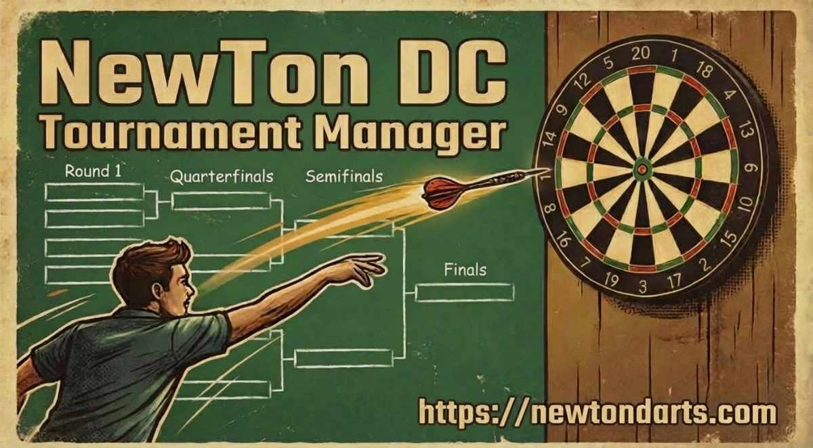
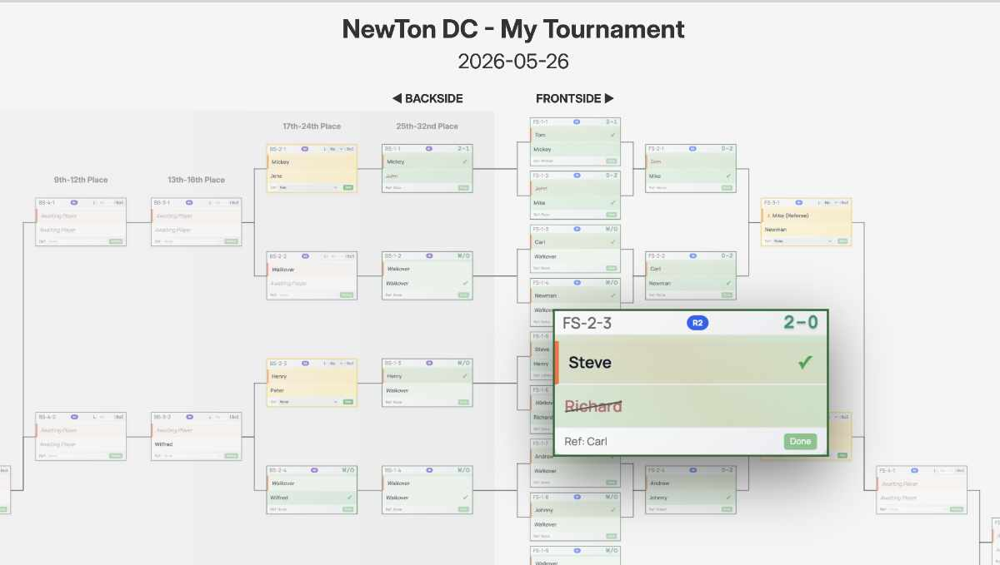
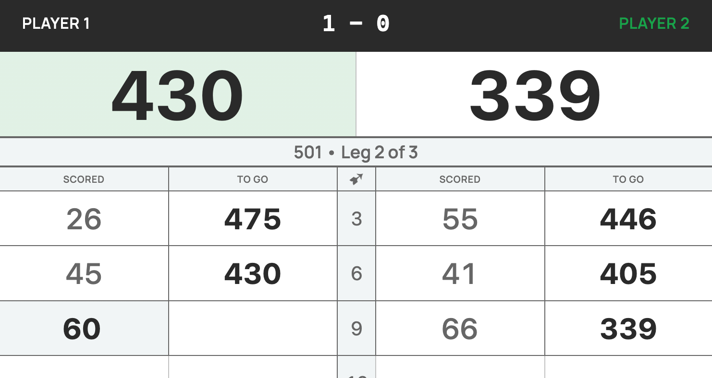
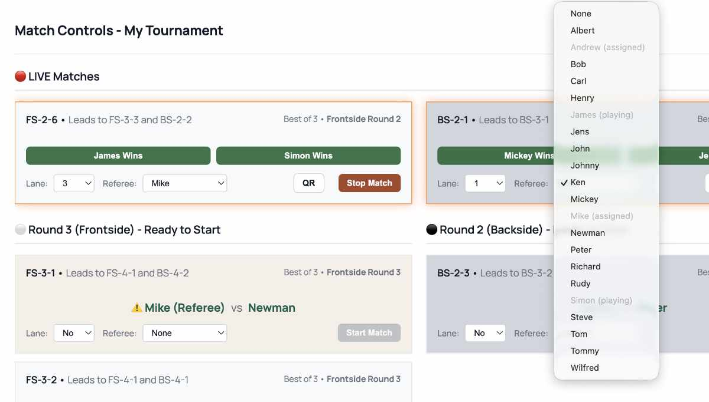
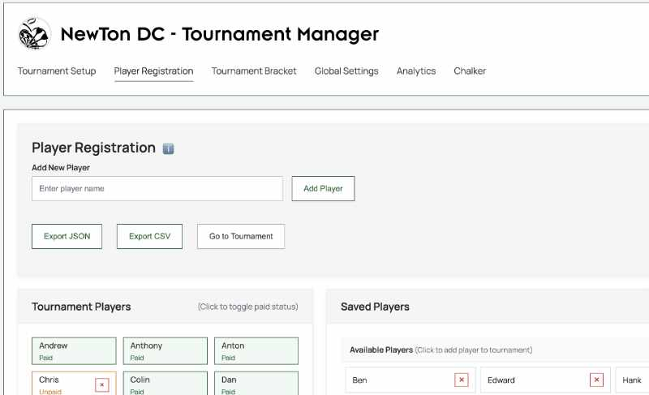
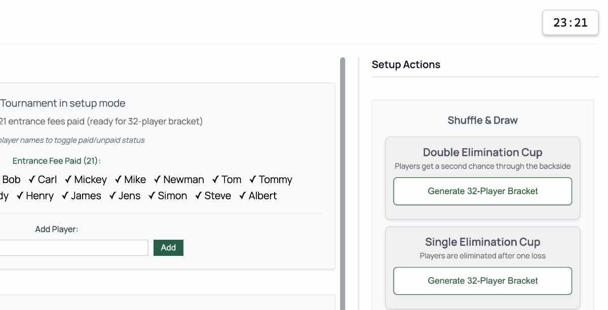
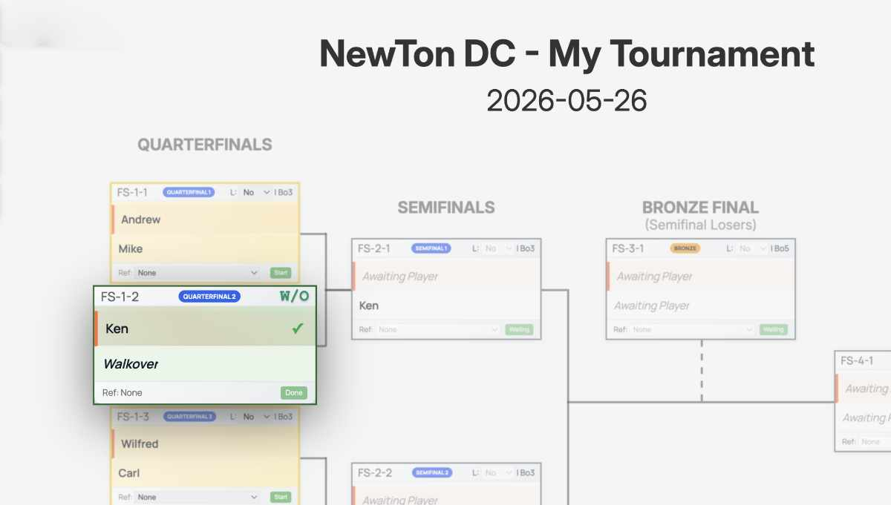
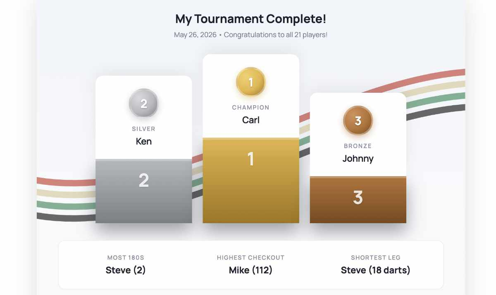

NewTon DC Tournament Manager
NewTon DC Tournament Manager
Free, Open-Source Darts Tournament Manager
Run professional single and double elimination darts tournaments entirely from your browser. No server, no database, no internet connection required. Your data never leaves your device.

Get Started
Local Use
Download the latest release, unzip, and double-click tournament.html. No installation required — runs entirely in your browser.
Self-Hosted
Deploy on your own server in under 2 minutes. Lightweight Docker container with nginx — perfect for club or venue use.
Docker QuickstartUser Guide
From first download to Grand Final — everything you need to run a smooth tournament. Formats, configuration, match management, results, and tips.
Architecture & Reliability
Built to never lose a match result. Hardcoded lookup tables, transaction-based history, and offline-first design — learn how the internals make it virtually crash-proof.
See It in Action

Interactive Tournament Bracket
The full bracket rendered as a zoomable, pannable canvas. Click any match card to zoom in and see player details, scores, and match status. Progression lines trace the path from round one to the final. Works beautifully from 4-player brackets all the way up to 32.

Tablet Scoring at the Board
Scan the assignment QR from the Tournament Manager and the Chalker is ready to score — player names, format, lane, and referee all arrive automatically. When the match is done, it generates a result QR. One scan at the Tournament Manager and the bracket advances. No manual entry, no mistakes.

Run Your Tournament from One Panel
The Match Controls panel is your command center. See which matches are ready, assign lanes and referees, and generate an assignment QR for the Chalker — player names, format, and referee travel in a single scan. When the match is done, scan the result QR back and the bracket advances, complete with stats. Smart referee suggestions highlight available players and flag conflicts automatically.

Registration Made Simple
Add players from your saved roster or register new ones on the spot. The dynamic help system guides first-time users through every step. Player data persists across tournaments, so your regulars are always one click away.

From Zero to Bracket in 60 Seconds
Name your tournament, pick a date, choose single or double elimination, and you're ready to go. The bracket size adapts automatically to your player count. No configuration rabbit holes — just the essentials.

Intelligent Seeding & BYE Handling
The draw algorithm distributes players fairly across the bracket, and when the field isn't a perfect power of two, BYEs are placed strategically so no player gets an unfair advantage. Real players advance automatically past empty slots — no manual intervention needed.

Celebrate the Champion
When the final dart lands, the winner gets the spotlight they deserve. Full podium results, final standings, and the satisfaction of a tournament well run. Export results as CSV for your league records or share the JSON for next time.